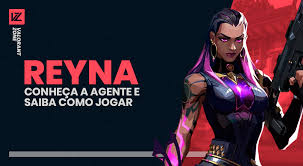

Valorant Agentes
Reyna é uma agente que representa o México e é classificada como Duelista, que são abatedores independentes e estão sempre prontos para o confronto.
A personagem domina o combate individual, destacando-se a cada abate efetuado. Sua capacidade só é limitada por sua própria perícia, tornando-a bastante dependente de desempenho.
habilidades
 Devorar (Q)
Máximo de cargas: 2
Custo: 200
Passiva – Colheita de Almas: Adversários abatidos por Reyna deixam Orbes que duram 3s
Ativação: Instantaneamente consome uma Orbe de Alma próxima, curando-se de forma rápida por um curto período de tempo. A quantidade de vida concedida por esta habilidade que ultrapassar 100 decaíra ao longo do tempo. Se a habilidade Imperatriz (ultimate) estiver ativa, esta habilidade será conjurada automaticamente e não consumirá a Orbe da Alma
Devorar (Q)
Máximo de cargas: 2
Custo: 200
Passiva – Colheita de Almas: Adversários abatidos por Reyna deixam Orbes que duram 3s
Ativação: Instantaneamente consome uma Orbe de Alma próxima, curando-se de forma rápida por um curto período de tempo. A quantidade de vida concedida por esta habilidade que ultrapassar 100 decaíra ao longo do tempo. Se a habilidade Imperatriz (ultimate) estiver ativa, esta habilidade será conjurada automaticamente e não consumirá a Orbe da Alma
Dispensar (E)
Máximo de cargas: 2
Custo: 200
Ativação: Instantaneamente consome uma Orbe de Alma próxima, ficando inatingível por um curto período. Também se torna invisível se a habilidade Imperatriz (ultimate) estiver ativa.
Olhar Voraz (C)
Máximo de cargas: 2
Custo: 250
Primeira ativação: Reyna conjura um olho etéro e destrutível
Segunda ativação: Reyna lança o olho a uma curta distância. O olho deixará com visão turva todos os inimigos que olharem para ele.
Ultimate (X) – Aumenta temporariamente a taxa de tiro, diminui o tempo de recarga e acelera o uso de suas habilidades.
Jett é uma agente que representa a Coreia do Sul e é classificada como Duelista, um especialista em eliminar os adversários. Ela possui um estilo ágil e evasivo que a permite correr riscos que nenhum outro pode. Uma das maiores forças de Jett é a possibilidade da agente circular tdas as lutas, conseguindo assim derrotar os adversários antes mesmo que saibam o que os atingiu.
Habilidade 1 – Corrente Ascendente (Q)
Máximo de Cargas: 2
Custo: 150
Ativação única: Impulsiona Jett instantaneamente para o alto
Erupção de Brumas (E)
Máximo de Cargas: 2
Custo: 200
Ativação única: Jett lança instantaneamente um projétil que se expande em uma nuvem de ar, bloqueando a visão de todos. Mantendo a tecla da habilidade pressionada enquanto move a mira possibilita lançar o projétil em curva.
Brisa de Impulso (C)
Máximo de Cargas: 1
Custo: Sem Custo
Ativação única: Impulsiona Jett instantaneamente para a direção que a agente está se movendo. Se ela estiver parada, a habilidade a impulsionará para frente. A skill pode ser usada outras vezes na rodada, mas para recarregá-la é preciso eliminar dois adversários
Tormenta de Aço (X)
Máximo de Cargas: 1
Custo: 7 orbes ou eliminações ou spike plant ou spike defuse
Primeira ativação: Jett se equipa com um conjunto de facas de arremesso e alta precisão. Elas recarregam se a agente matar um oponente.
Segunda ativação: Clicando com o botão esquerdo, Jett lança uma única faca n alvo. Clicando com o botão direito, a agent lança toda as facas restantes.>